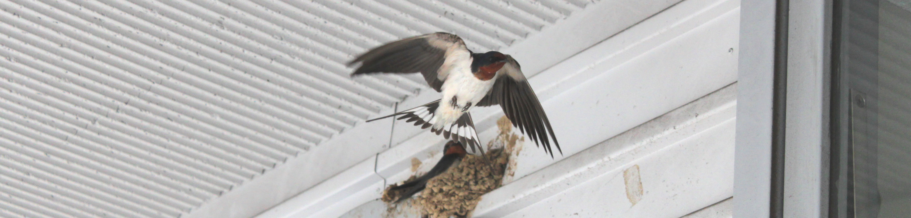

９. 紀一くん作文ワールドⅡはじめに |
① 「無人島キャンプ」 ② 「伊江島一周」 ③ 「メーデガー」 ④ 「沖縄の作物」 ⑤ 「ひめゆりの塔」 ⑥ 「組踊り」 ⑦ 「琉球民謡」 ⑧ 「エイサー」 ⑨ 「琉球王国・首里城」 ⑩ 「中城村（なかぐすくそん）」 ⑪ 「沖縄県と米軍基地」 ⑫ 「沖縄の方言」 |
９. 紀一くん作文ワールドⅡはじめに |
① 「無人島キャンプ」 ② 「伊江島一周」 ③ 「メーデガー」 ④ 「沖縄の作物」 ⑤ 「ひめゆりの塔」 ⑥ 「組踊り」 ⑦ 「琉球民謡」 ⑧ 「エイサー」 ⑨ 「琉球王国・首里城」 ⑩ 「中城村（なかぐすくそん）」 ⑪ 「沖縄県と米軍基地」 ⑫ 「沖縄の方言」 |
 作文ワールド（原点）
作文ワールド（原点）  Ⅱの表紙へ 作文ワールドⅢ「社会科作文」 Ⅳ「理科作文」
Ⅱの表紙へ 作文ワールドⅢ「社会科作文」 Ⅳ「理科作文」
Ⅴ「スポーツ作文」 Ⅵ「七五の四行詩」 Ⅶ「図工作文」 Ⅸ「家庭科作文」
Ⅷ「エトセトラ」 Ⅹ（作文のこころ）
「東日本大震災」の作文・第１部 第２部・第３部
作文打出の小づち
作文編 国語編 小論文編 閑 話
 トップページ
トップページ  小学生の国語と作文 公立中高一貫校入試の作文
小学生の国語と作文 公立中高一貫校入試の作文
紀一くんは小学６年生。沖縄市に住んでいる。
このホームページには既に「修学旅行」（北海道）で登場している。
紀一くんは沖縄の歴史や地誌に興味をもっている。
目次の①～⑥は５年生の時のものである。
この作文は、はじめは「あんなこと、こんなこと」の中の
「きれいだな」という題で書かれたものだった。
| はじめの作文 | 添削例・諸注意 |
| ぼくは去年の夏、子供クラブで無人島へ行きました。陸上から見ると、緑、青、水色で、また、下に岩があると、黒々と見えてきれいでした。水中ではサンゴしょうが広がっていて、青、水色、赤、緑など、とてもきれいでした。 この無人島にはいろいろな魚、イカ、タコ、カメなどが泳いでおり、きれいな貝もたくさんありました。魚はカツオやオジサンなどが泳いでおり、貝類ではサザエ、アワビなどがたくさんありました。このサンゴしょうの海はびっくりするほどきれいです。 ぼくが一番言いたいのは、うちなんちゅうの海はとてもきれいだということです。 |
← 陸上から海を見ると、 ← また、岩があると、岩かげが黒々と見えました。水中では…… ← ……海は、すきとおっていて、カラフルで、びっくりするほど…… ※ 「うちなんちゅう」というのは、「おきなわ（沖縄）」ということなのだね。 |
無人島ではどんなことをしたのだろう。
おもしろいことがいっぱいありそうなので、
くわしく書いてもらうことにした。
| 書き直した作文 | 添削例・諸注意 |
| ぼくは去年の夏、子供クラブで無人島へ行きました。子供たちが２０人、大人が５人の全部で２５人です。那覇からボートに乗って、約１時間くらいで着きました。ボートから降りて、砂浜に荷物を下ろしました。そして、ボートをつないで、荷物を持ってキャンプ場に行きました。 キャンプ場には、ぶっこわれたトイレの小屋が立っていました。さっそくトイレに行ってトイレをしました。しかし、じゃぐちをひねっても、水が流れませんでした。なので、手洗い場に行って手を洗おうとしましたが、水が出ませんでした。トイレにはヤドカリがうようよいました。 トイレをすませてテントを立て、海へ遊びに行きました。海にはサンゴしょうがあり、いろいろな魚が泳いでいました。つりざを使って、魚をたくさんつりました。その魚を夕食で、みんなが持ってきた食料といっしょに食べました。 夜の９時くらいになって、みんなねてしまいました。ぼくはなかなかねむれませんでした。そこで、砂浜にねっころがって、遠い那覇の町の光を見ていました。そうしたら、満月が出てきていて、空にはたくさんの星がかがやいていました。時々、流れ星が流れていました。ずっと見ていると、天の川が見えてきました。とてもきれいでした。 ２日目は、朝ごはんを食べて、海へ遊びにいきました。ボートに乗って沖へ行きました。つりをしたり、飛び込みをしたり、もぐったりして遊びました。 お昼ごろに沖から帰って、お昼ごはんを食べました。みんなでとった物も食べました。それから、また海へ行って、夕方まで遊びました。 少し暗くなって夕食の準備をしました。みんなで魚じるや魚の天ぷらをいっぱい食べました。 夜、みんな早くねてしまいました。でも、ぼくはぜんぜんねむれませんでした。なので、テントから出て、夜空の星を見ていました。そして、そのまま砂浜でねてしまいました。 ３日目は、起きてすぐ、帰る準備をしました。朝ごはんを食べて、少し海で遊びました。 お昼になって、持ち物をすべてボートに積みこんで、無人島を出ました。波が少しあらかったので、顔に塩水がかかりました。 この無人島できれいだったのは、夜空の星とサンゴしょうの海でした。 |
← 約１時間で、（１時間くらいで） ※ 「なので」→「だから」（そこで） ← みんなでとった魚や貝も…… ← ……魚の天ぷらを作って、いっぱい食べました。 ※ 「なので」→「そこで」 ← そこで、今夜もテントを出て…… ← 砂浜でねむってしまいました。 |
② 「伊江島一周」
沖縄本島の中ほどに、西北に突き出た本部半島がある。
伊江島は、その半島の突端の西方5キロほどの所にある。
東西約８キロ、南北約３キロの長方形の島である。
第２次大戦末期の沖縄戦では激戦地の一つであった。
| はじめの作文 | 添削例・諸注意 |
| 昨年の冬休みに、子供クラブで伊江島に行きました。子供が２０人、大人が５人です。いったん南部の那覇市まで行って、そこからバスで北部の本部町まで行きました。約２時間で港に着きました。 伊江島へはボートに乗って行きました。１そうに子供１０人、大人２人で、大人が運転しました。あとの人はフェリーに乗って行きました。バスもいっしょです。ボートもフェリーも１時間半ぐらいで島に着きました。 すぐにキャンプ場へ行き、枯れ葉や木の枝を燃やしてラーメンを作りました。暗くなる前にテントを張って、すぐにねました。 次の日、朝食を食べて、キャンプ場内を自転車で走ってウォーミングアップをしました。そして、キャンプ場を出て、自転車をこぎ出しました。伊江島を１周するには約約５０キロメートル走ります。 こいでいると、時々鳥が出てきてびっくりしました。道の両側はほとんで畑です。この島にはワシがいると聞いていたので、あたりを見回していると、真正面の木に１羽止まっていました。でかでかで、とてもかっこよかったです。 島を４分の１周くらいして、ビーチでカレーを食べました。ビーチでは水切りをしました。それからまた自転車に乗ってこぎ出しました。途中の海が見えるところでスピードを上げると、風が顔に当たってすずしかったです。 それから、タッチュウに登りました。とても高くて、いい眺めでした。その次に、洞くつに入って遊びました。この洞くつは、入り口は整備されているのに、中は整備されていないので、途中で足をすべらせて、転んで水の中にに入ってしまいました。すごく深いガマでした。 それからずっとずっと夕方まで一生けんめいこいで、やっと１周しました。 |
※ 本部町は本部半島の突端から少し南に下がった所ににあるんだね。 ※ 海岸線を走るわけではないんだね。 ○ 波が静かだったのだね。 ○ 冬でも寒くないのだね。 ※ 城山とも呼ばれる、島で一番高い山のことだね。 ※ この洞くつは大戦中は防空壕として使われていた「千人ガマ」と呼ばれる所なのかな。 |
激戦のことに触れておいてほしいところだが、
自転車をこぐのに一生懸命で、跡地もあまり目に入らなかったようだ。
もどる
| はじめの作文 | 添削例・諸注意 |
| ぼくの家の近くに、「メーデガー」という湧き水があります。メーデガーの「ガー」はわき水という意味で、「メーデ」というのは、勝手につけられた名前です。 昔はこのわき水を利用して洗たくや飲み水として使っていました。この美里には、わき水の池がけっこうありました。それが今では文化財になっています。今はグッピーやザリガニ、メダカ、イモリなど、たくさんの生きものがいます。沖縄はよく水不足になるので、家にはほとんどタンクが付いています。 美里にはメーデガー、ヒージャガー、ヒーメガーなど、わき水が何か所かあります。メーデガーはぼくの家から１０メートルぐらいの所にあります。ぼくはよくそこに行って魚をとったりして遊んでいます。そこでザリガニを取りました。最初は４ｃｍぐらいだったのが５か月たつと、１０ｃｍにもなりました。 メーデガーの深さは約１ｍあります。雨が降っている時は水の温度が低く、晴れている時はぬるいです。 |
※ 池かな。どのくらいの大きさなのだろう。 ※ タンクのことをここにもってこよう。 ※ どういうわけで文化財になったのかな。 ← 魚をつったりザリガニをとったりして遊んでいます。ザリガニは最初は…… |
興味深いことがポツポツと書かれている。
紀一くんにはいろいろな質問をして書き直してもらった。
| 書き直した作文 | 添削例・諸注意 |
| ぼくの家の近くに、「メーデガー」という湧き水の小さな池があります。たてが約２メートル、横が２メートル半ぐらいで、深さは約１メートルです。メーデガーの「ガー」はわき水という意味で、「メーデ」というのは、だれかが勝手につけた名前です。 沖縄は水不足になることが多いので、今はほとんどの家にタンクが付いていますが、昔はこのわき水を使って飲み水や洗たくに利用していました。この美里の町には、メーデガー、ヒージャガー、ヒーメガーなど、わき水の池がけっこうあります。近所のおばあやおじいが「水は昔っからの宝だ」と言っています。こうした宝が今では文化財になっています。 池にはグッピーやザリガニ、メダカなど、たくさんの生きものがいます。ぼくはよくそこに行って遊んでいます。ザリガニを１ぴきつかまえたことがあります。最初は４センチメートルぐらいだったのが、５か月たつと１０センチメートルにもなりました。 メーデガーは、雨が降っている時は水の温度が低く、晴れている時はぬるいです。水はとてもすんでいて、きれいです。 |
| はじめの作文 | 添削例・諸注意 |
| ぼくは５年生になって、社会の授業で日本について勉強しました。日本は自給率が低く、外国からいろいろなものを輸入しています。肉類、野菜、果物、小麦、大豆などです。日本は輸入しているけれど、自分たちでも食物を生産しています。日本の生産で、第１位はお米です。 僕が住んでいる沖縄県は小さい島ですが、いろいろな食物を作っています。野菜ではにんじん、ゴーヤー、紅いもで、果物ではドラゴンフルーツ、パパイヤ、パイナップルなどです。 今から約４５０年前、琉球は貧しい暮らしをしていました。儀間真常は、村の暮らしをよくする方法はないかと、いつもなやんでいました。真常という人は、今の那覇市にある垣花町、儀間村の領主でした。真常は中国から、いもの苗を持ち帰りました。台風や日照りに強い作物だからです。けれども、人々の暮らしはよくならないので、サトウキビを使った黒ざとう作りをするため、村人を中国に行かせて、さとうの作り方を学ばせました。そして、いもやさとうが広まったおかげで、人々の暮らしがよくなっていきました。 このような歴史があって、紅いもは紅いもタルトになり、サトウキビは黒ざとうやバイオ燃料になっています。 |
← 食糧自給率が低く、 ○ 儀間真常（ぎましんじょう） ※ 紅いもは薩摩（鹿児島県）に渡ってサツマイモとなり、全国に広まったのだね。 |
紀一くんたちはいい勉強をしているものだ。
これがほんとうの勉強なのだろう。
もどる
| はじめの作文 | 添削例・諸注意 |
| ぼくはお正月休みに、南城市でのマラソン大会に参加した後、家族で糸満市にある「ひめゆりの塔」へ行きました。ひめゆりの塔は、沖縄本島の南部にあります。塔は公園の中にあって、女子生徒の名前がきざまれています。 今から約７０年前、太平洋戦争が勃発し、１９４５年４月１日にアメリカ軍が沖縄に上陸しました。上陸前の２月２３日に、「ひめゆり」の愛称で親しまれていた、沖縄師範学校女子部と沖縄県立第一高等女学校の生徒２２２人、教師１８人が南風原の陸軍病院で看護要員として働いていました。５月下旬にアメリカ軍が迫ってきたので、南部の伊原へ移動しました。戦況が悪化する中、６月１８日に看護要員に解散命令が出されました。行き場を失った生徒たちは、砲撃やガス弾攻撃の中で１４０人も亡くなりました。６月２３日に沖縄戦が集結しました。３か月の間に２０万人以上の人々が亡くなりました。 戦争に巻き込まれた人の話を聞いたとき、「海には死体が浮かんでいて、陸には山のように死体が積み重なっていた」と言っていました。この話を聞いて、ぼくは戦争が怖くなりました。戦争は二度と起こってほしくないと思います。 |
← 沖縄戦で亡くなった女子生徒の名前が石碑に…… ← 後に「ひめゆり」の愛称で親しまれた、 ※ 南風原（はえばる）は那覇市の南東５キロぐらいの所にあって、病院といっても、丘の斜面に掘られた横穴だったそうだね。 |
ひめゆり部隊とも言われる学徒隊の悲劇が手短に書かれている。
これ以上のことになると、一書を要する。
沖縄戦の背景など、詳しいことは「ひめゆり平和祈念資料館」で。
（※「スクリプトエラー」が出ても、続行を「はい」としてください）。
⑥ 「組踊り」
世界文化遺産にも登録されている沖縄の伝統芸能
についての作文を紹介しよう。
| はじめの作文 | 添削例・諸注意 |
| ぼくは４年生の時に沖縄について勉強しました。その中に「組踊り」がありました。日本の踊りは、例えば歌舞伎や阿波踊りなどでは体を大きく振っていますが、沖縄の組踊りは動きがゆっくりで、音楽といっしょに細かく踊ります。 今から３００年ほど前、朝薫は王城間切の領主の家に生まれました。朝薫は組踊りを作った人です。１２歳の時、首里城で王に仕えるようになりました。２０歳の頃から王子につきそって薩摩や江戸に行き、能や狂言などの芸能を学びました。しっかり学びました。 朝薫は沖縄に元からある歌や踊りを大切にし、古くからある物語を組み合わせて組踊りを作りました。ある時、中国から使者が来て、歓迎するため、朝薫は組踊りをひろうしました。中国の使者は感激して、組踊りのすばらしさを日記に書きとめています。王城朝薫は５０歳で亡くなりました。 このような歴史があって、今では「子ども組踊り」もあります。踊りや音楽は琉舞道場、三線などに残っています。 ぼくは最近、三線を習い始めました。三線は弦が３本あって、音符は漢字で１６種類もあります。本土で使う三味線ではしゃもじのようなもので弦をはじいて音を出しますが、三線ではクマのつめのようなものでひきます。ぼくは組踊りの曲を全部ひけるように、一生けんめい練習しています。 組踊りは沖縄の一つの宝です |
← 三線（さんしん）などに受け継がれています。 |
歌舞伎の名優・坂東玉三郎さんの演目にも取り入れられている。
こちらへ。
「組踊り」の舞台写真等についてはこちらへ。
もどる
おなじみの歌の成立についての作文を紹介しよう。
| はじめの作文 | 添削例・諸注意 |
| 沖縄にはたくさんの民謡があります。そのうちの120曲余りを作曲したのが、宮良長包という人です。 宮良長包は1883年に石垣島の新川で生まれて、八重山島高等小学校の先生になり、1915年に沖縄県師範学校付属小学校に移りました。このころ戦争が起こっていて、学校では自由なふんいきがしめつけられるようになりました。そんな暗い時代の中でも、長包はいつもにこやかな顔をして、「やあ」と声をかけ、肩をポンとたたきました。そんなことから、「ニコポン先生」と呼ばれました。長包は、沖縄の音楽を広く行きわたらせたいと考え、沖縄独特の楽譜によって表すことにしました。そのような工夫をしながら作曲活動を続けて、初めて「鳩間節」という曲を世に出しました。長包は沖縄の音楽をさらによくして、みんなに親しませることが大切と思いながら作曲していきました。そして、1934年に「安里屋ユンタ」を作曲して、1939年に亡くなりました。 沖縄の民謡で最も有名なのが「安里屋ユンタ」という曲で、元は八重山の民謡です。歌詞の意味は「男の人と女の人が、またいっしょに会いましょう」ということです。この曲はみんなが歌いやすいように作られています。 長包が作曲したたくさんの曲が今に歌い継がれているのは、みんなに喜んでもらいたいと考えて作ったからだと思います。 |
← 生徒に「やあ」と声をかけ、 ※ 「長包は、沖縄の……」で改行する。 |
「安里屋ユンタ」というのは、どんな歌か、
歌詞といっしょに紹介しよう。こちらへ。
（スクリプトエラーが出ても、続行の「はい」を押してください）。
http://www.yoshinaga.asia/a01.html
（吉永安正琉球音楽研究所）
もどる
| はじめの作文 | 添削例・諸注意 |
| エイサーは沖縄の伝統行事で、日本本土の盆踊りのようなものです。お盆に盆踊りが行われるように、エイサーも旧盆に行われます。各地区の青年会が「道ジュネ―」といって、家々を回って祖先の霊を見送ります。大太鼓、シメ太鼓、パーランク―をかけ声とともに打ち鳴らし、三線の音楽に合わせて踊ります。また、チョンダラーといって、顔を白くぬり、自由に動き回って人をおどかしたり、指笛を吹いたりもします。 最も古いエイサーの記述は、挑戦の「李朝実録」の中に当時の那覇の記録として残っており、１４７９年頃が始まりだったと考えられています。 僕たちは毎年、運動会でエイサーを踊っています。３年生から６年生まで、運動場いっぱいに広がって踊ります。僕は去年はパーランク―で、今年はシメ太鼓で踊りました。また、弟は保育園でもエイサーを踊っています。 エイサーを踊っていると、地面からパワーをもらっているように感じます。それが人を感動させる力になり、そのため、エイサーはいつまでもみんなに親しまれているのだと思います。 |
← 祖先の霊をお迎えし、また、見送ります。 ← ……に合わせて踊り、通りをねり歩きます。 ○ 一人一人が太鼓を肩にかけ、打ちながら踊るんだよね。 |
短い中に、歴史も現状も簡潔に盛り込まれている。
太鼓については「エイサー太鼓」で検索してみてください。
もどる
| はじめの作文 | 添削例・諸注意 |
| ぼくの住んでいる町から南のほうへ車で行くと、約１時間で那覇市に着きます。那覇市には首里城という大型グスクがあります。グスクというのはウチナァぐち（沖縄語）でお城という意味です。 首里城はいつ、だれが築いたのか分かっていませんが、１３世紀末ごろではないかと考えられています。首里城は尚巴志によって王宮として整えられ、１５世紀の尚真の時代に正門の観会門が建てられるなど、城としての品格を備えていきました。城郭を中心に、国王が政（まつりごと）を行う正殿と、中国からの使節を迎えるときに使った御庭（広場）があります。正殿は３階建てで高さが１６メートルあり、屋根が四方に延びる入母屋造りです。柱や屋根に中国風の飾りがあります。日本や中国、琉球の技術が取り入れられた建物です。しかし、１９４５年の沖縄戦で壊されてしまいました。残っていたのは守礼門だけでした。 首里城は１９９２年に復元され、多くの人に親しまれています。 |
○ 下のほうから守礼門→観会門→広福門を通って城の中心部に着くのだね。 |
首里城の成り立ちが手際よく書かれている。
首里城についてはこちらへ。
http://oki-park.jp/shurijo-park/about/
もどる
⑩ 「中城村（なかぐすくそん）」
高知県の中高一貫校・県立中村中学校では
次のような課題が出されている。
「あなたが住んでいる町を、今よりもっと住みやすい町にするために、
あなたたが必要だと思うことは何ですか」。
この作文はこの課題に答えたものである。
| はじめの作文 | 添削例・諸注意 |
| ぼくが行っている学校は、中城村（なかぐすくそん）という所にあります。周辺が緑に囲まれていて、とてもよい環境にあります。昔はここに中城（なかぐすく）城という城があり、勝連城や知花城、首里城など、周りの城と戦争をしていました。 中城村は高台にあり、木登りトカゲ、イモリ、ハブなど、いろいろな生き物がいて、空気もおいしいです。しかし、低地のほうへ行くと、川がくさくて、にごっています。みんながゴミを捨てるためです。ゴミが海に流れ込んでいるので、魚や貝、サンゴが死んでいっています。ゴミを食べた魚や貝は人間に食べられますが、人間が病気になってしまうことがあります。 県外の人から見れば、沖縄の海はきれいに見えるかもしれませんが、沖縄県は一部の自然が破壊されています。住みよい町づくりというのは、町並みだけでなく、山や川、海などを守っていくことによって、きれいな町になり、住みよい町に」なると思います。 |
◎ いいところに目を付けたね。歴史の一端を知ることもできる。 ※ 「県外の……」を前の段落につないで、「住みよい町……」で改行して締めくくりとしよう。 |
作文の条件は400字以内ということである。
簡潔明瞭に収まっている。
「中城城跡」については、こちらへ
| はじめの作文 | 添削例・諸注意 |
| 日本は太平洋戦争でアメリカに負けたため、全国に米軍基地が置かれました。その７５％が沖縄にあります。沖縄は米軍に土地をうばわれたり、基地に反対する人はブルドーザーで家をこわされたりしました。そのうち、米軍基地は倍増していきました。米軍は、いつでも戦争ができるように、本島北部や離島で訓練したり、爆撃機に爆弾や燃料を積んだりしていました。 １９９５年、石川・宮森小学校に大型ジェット機がつい落しました。この時、大火事になって、たくさんの死者が出ました。パイロットはエンジンが故障しかけていることを知りながら乗り、飛行中にエンジンがこわれたため、自分はパラシュートで降り、飛行機は無人のままつい落しました。 ２００４年の８月１３日、沖縄国際大学に米軍ヘリコプターがつい落しました。校舎に火がつき大火事になりました。しかし、幸いに死者は一人も出ませんでした。 ぼくは基地に反対です。ぼくが通っている学校の近くに、世界一危ないと言われている普天間基地があります。そこから、新型輸送機のオスプレイや大型ジェット機、米軍ヘリコプターが、校舎すれすれの上空を飛び交っています。時々、戦闘機が上空に飛んでくると、あまりにも騒音がうるさくて、みんなの声がぜんぜん聞こえません。そんなものがいつつい落してくるかわかりません。だから、ぼくは基地に反対しています。 現在でも、米兵のひき逃げ、殺人、ごう盗、放火など、事件が数多く起こっています。沖縄県民は、毎年のように県民大会を開き、基地に反対して土地を返せと言っています。ぼくもそう思います。だけど、基地には悪いことばかりでなく、良いこともあります。それは日本を守ってくれたり、基地でも働けたりすることです。だから、いつまでも反対し続けるのではなく、おたがいに信じ合い、にくしみ合わないことが大切だと思います。それはとても難しいことですが、ぼくは、いつまでも平和であるように願っています。 |
○ 当時のフィルムが残っているね。土煙を上げて家を壊している。 ○ この事件は記憶に新しい。建物の白い壁が黒くなっていた。 この大学は普天間飛行場の滑走路の出入り口の、すぐそばにあるよね。 |
基地の歴史と現状をよく認識しているばかりでなく、
問題を客観的に見る目も持ち合わせている。
この機会に、
基地の問題について、国民の立場で考えてみよう。
「防衛は必要である」ということを前提にすれば、
基地負担は全国民が分かち合うべきである。
「私の町には反対」という考えは許されてはならない。
基地に危険は付きものである。
ただ、飛行訓練や騒音について、その対策は可能であるから、
じゅうぶんな処置が施されなければならない。
では、どう負担を分かち合うべきか、そのためには、
防衛にはどの程度の装備が必要かを考える必要がある。
そうして、装備を必要最小限に絞り込んでいく。
その上で、自衛隊基地を含めた全国の基地にそれを分担させ、、
各基地には最大限の機能をもたせる。
そうすれば、集約化による土地の有効活用となって、
新たに基地を作る必要もなく、余る土地も出るであろう。
それが、沖縄の負担の軽減にもつながるであろう。
現在の政治に足りないのは、
防衛力の適正規模についての思慮である。
もどる
| はじめの作文 | 添削例・諸注意 |
| 沖縄は、元々は日本ではなく、琉球王国でした。そのため、日本とは全くちがう言葉で話していました。沖縄の方言には、種類がいろいろあります。やんばる方言や、中南部、宮古、八重山、与那国方言があります。これらの方言も言葉や発音のしかたがそれぞれちがいます。 明治時代に日本が琉球処分をしたため、沖縄の人々は日本に行く時、日本語を話さないと差別されました。そのため、沖縄の人々は本土の人でも読めるように、名字の読み方を変えました。例えば、ぼくの名字のキンジョウは、昔はカナグシクと読みました。 1941年、太平洋戦争が始まりました。日本軍は沖縄の人がアメリカのスパイだと思い、方言を禁止しました。その後、太平洋戦争が終わり、アメリカ軍に土地を占領されて、沖縄の人々はアメリカ人を相手に商売をするようになりました。そのため、今では、日本語がヘタクソで、英語と方言を話す人がいます。 ぼくが住んでいる家の近くに、方言を話す人がいます。毎朝、バス停まで歩いていく途中、おじいさんが散歩しています。すれちがう時、いつも方言で話しかけてきます。だいたい聞き取れますが、話し返すことができません。 近年では方言を話せる人が少なくなっています。方言はその土地と生活から生まれ、表現としてふさわしいものなので、方言を教えてもらい、日常生活の中で使っていかなければならないと思います。 クンネー、ナマカライッペーデージ、ウチナーグチヌ、チカレヤーンディウムトービーン。 |
←◎ とてもいい例だ。 ←※ 方言は、日本軍には暗号のように聞こえたからなのかな。 ←◎ これもいい例だ。 ◎ 締めくくりがいいねえ。 |
紀一くんはニューヨークで生まれ、札幌で育ち、
6年前から沖縄に住んでいるのだという。
それにしては、日本語は正確で、沖縄のこともよく知っている。
おしまいの沖縄語は
「ぼくは、大変すごく沖縄の方言を大切にしています」
という意味なのだそうだ。
（次号未定）
準備中

しばらくお待ちください。
ご意見・ご希望・ご質問はこちらへ
もどる
